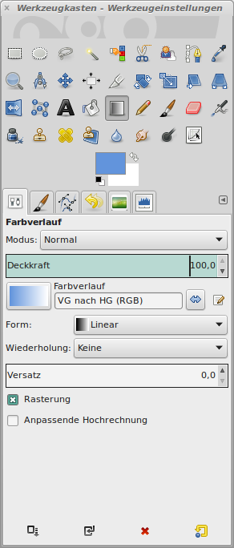
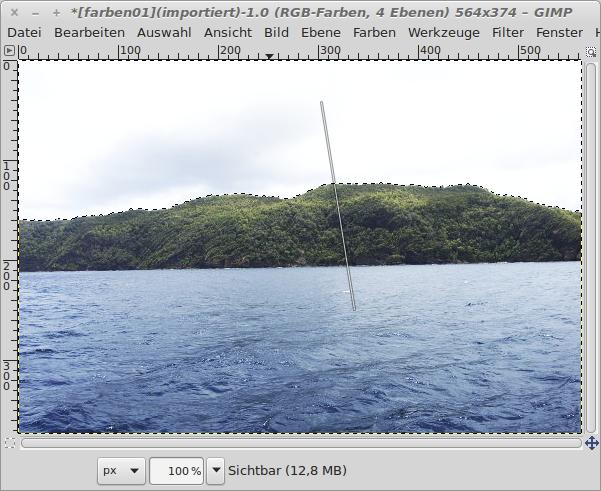
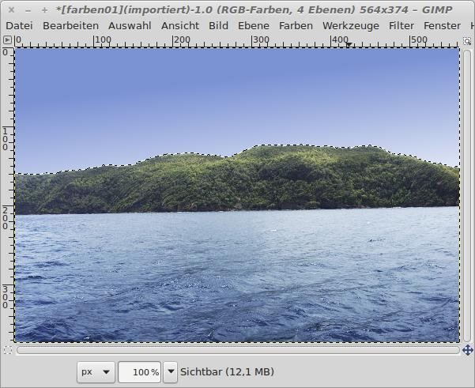

Den Himmel einfärben
Himmel Da wir nur den Himmel und nicht das ganze Bild einfärben wollen, muss der Himmel über ein Auswahlwerkzeug maskiert werden. Dazu eignet sich der Zauberstab hervorragend. Die Schwelle von ca. 30 wählt den Himmelsbereich genau aus.
 |
| Abb. 1: Das Ebenen-Werkzeug mit zweifach überlagertem Ausgangsbild |
Nach einem Klick mit dem Zauberstab wird der obere Bereich des Himmels als Auswahl markiert. Die "Ameisen" markieren die Grenzen des ausgewählten Bereichs.
 |
| Abb. 2: Die "Ameisen" zeigen den Verlauf der Auswahlgrenze |
Die Ansicht der Schnellmaske zeigt, dass der Himmel sauber ausgewählt wurde. Alle nicht ausgewählten Bereiche sind rot eingefärbt.
 |
| Abb. 3: Ansicht mit Schnellmaske |
Nun benötigen wir noch eine geeignete Farbe für den Himmel. Man könnte sich mit dem Werkzeug der Pipette aus einem anderen Bild die Farbe des Himmels kopieren oder diese über den Farbwähler selbst festlegen.
 |
| Abb. 4: Farbwerkzeug zum Festlegen der Vorder- und Hintergrundfarben |
Die ausgewählte Farbe wird im Symbol für die Vordergrundfarbe angezeigt. Jetzt ist das Symbol für den Farbverlauf anzuklicken. Eine lineare Form ist zu wählen.
|  |
| Abb. 5: Werkzeugkasten mit Farbverlauf-Werkzeug |
Nun wird mit der Maus eine Line von oben nach unten gezogen. Der leicht schräge Verlauf der Linie bewirkt, dass die Farben am rechten Rand etwas heller sind, als am linken.
|  |
| Abb. 6: Farbverlauf erstellen |
Sobald die linke Maustaste losgelassen wird, wird der Auswahlbereich mit dem Farbverlauf gefüllt.
|  |
| Abb. 7: Bild mit dem eingefärbten Himmel |
© 2009-2017 Michael Roppel